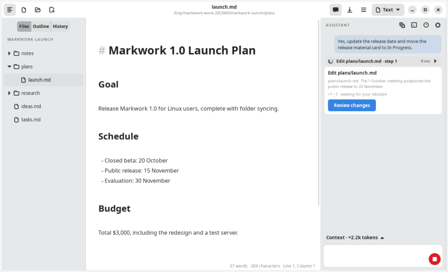

Getting started
Quick start
Markwork is a Markdown workspace for humans and AI agents on Linux, macOS, and Windows. You and the agent work in the same folder: the agent browses your notes, plans, and task boards, then proposes changes that are only written after you approve the diff.
Install
The installers are attached to each release: an AppImage and a deb for Linux, a dmg for macOS, and an exe installer for Windows. The AppImage, the dmg, and the Windows installer update themselves from the releases; the deb is updated by installing the next one.
Diagrams (Mermaid and DBML) and HTML pages need nothing extra: they are drawn by the window itself.
Get the code and run it
Node.js 20.19+ or 22.12+ is needed.
git clone https://github.com/EkaPutCom/markwork.git cd markwork npm install npm start
A file or a folder can be given after --:
npm start -- ~/notes # open a work folder npm start -- plan.md # open one file
npm run electron:dist builds the installers of the current system into release/.
Connect the agent
- Open the Assistant panel with Ctrl+Shift+A or the Assistant button (the sparkles) in the header.
- Click the gear icon, then enter your DeepSeek API key. The key is stored in the system keyring, not in the app settings. The
DEEPSEEK_API_KEYenvironment variable is also recognized. - Open a work folder (Ctrl+Shift+O) so the agent can browse other files and propose changes.
Try a first flow
Markwork follows one flow through the day, all in plain Markdown files in your work folder:
- Home. Start on Home: what to continue, today's journal, running agents, due dates, and the unprocessed inbox.
- Inbox. Capture ideas and quick notes in the inbox, then turn the worthwhile ones into cards.
- Journal. Write short notes in the journal; Markwork adds the day's activity for you.
- Kanban. Plan the work on a board. Due dates show up on Home.
- Agent. Ask in the Assistant panel, for example “Update the release date and move the release material card to In Progress.” The agent proposes the changes, the review window shows the diff, and you press Apply or Reject.

Next steps
Website appearance
This website starts in the dark theme. Use the appearance button at the foot of the sidebar to switch to light; your browser remembers the choice across pages. On a phone, open the navigation first. Screenshots and GIFs follow your selection. If your device prefers reduced motion, the website shows a still image instead of each animation. This preference only changes the website; the application's theme is set in its own Preferences. Website icons are embedded in the page and also work when you open an HTML file directly from your computer.